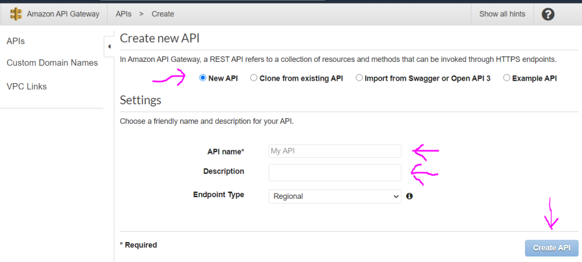
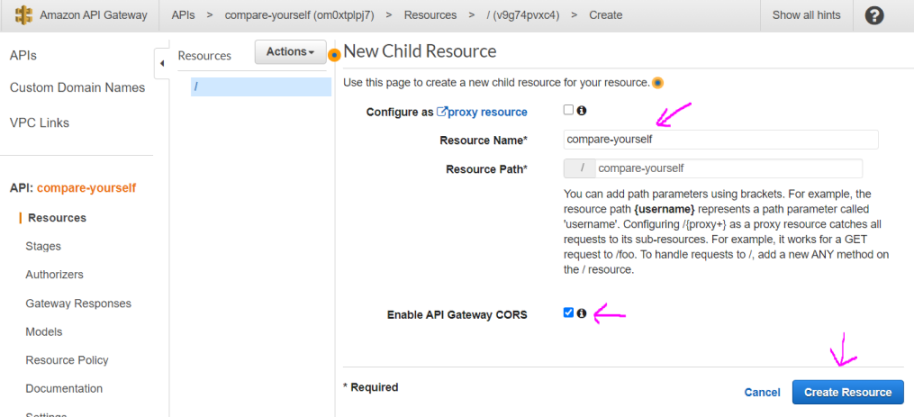
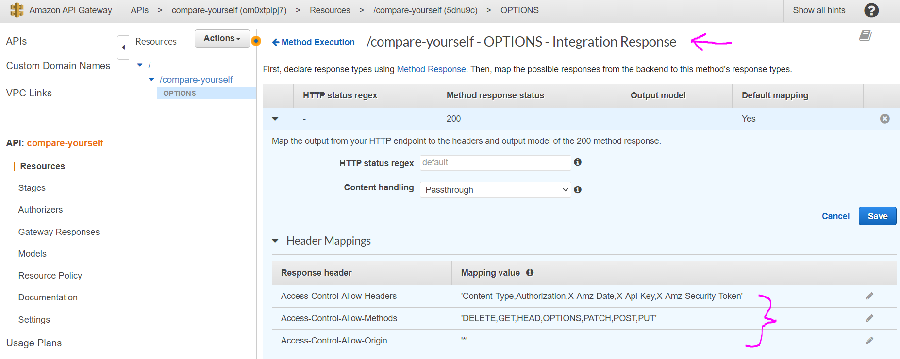
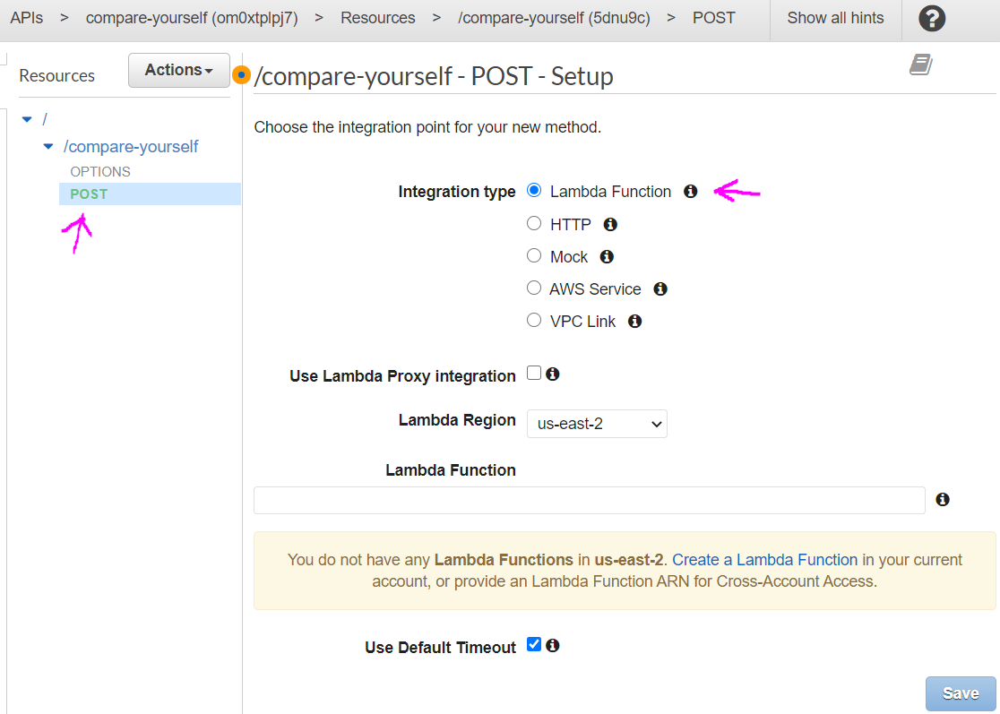
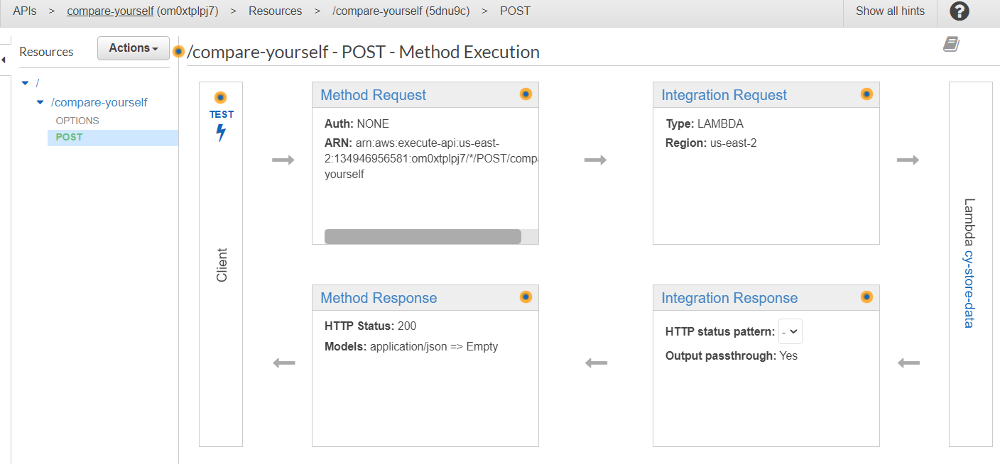
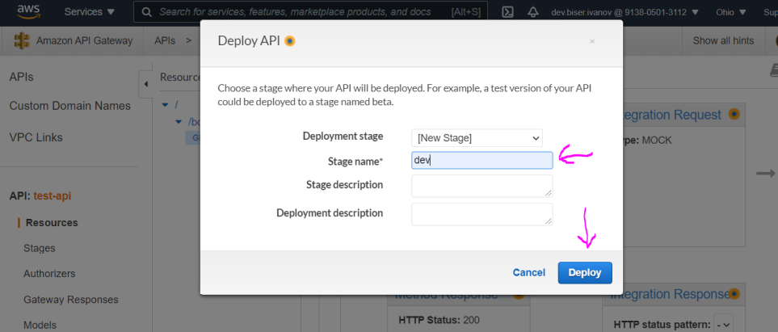
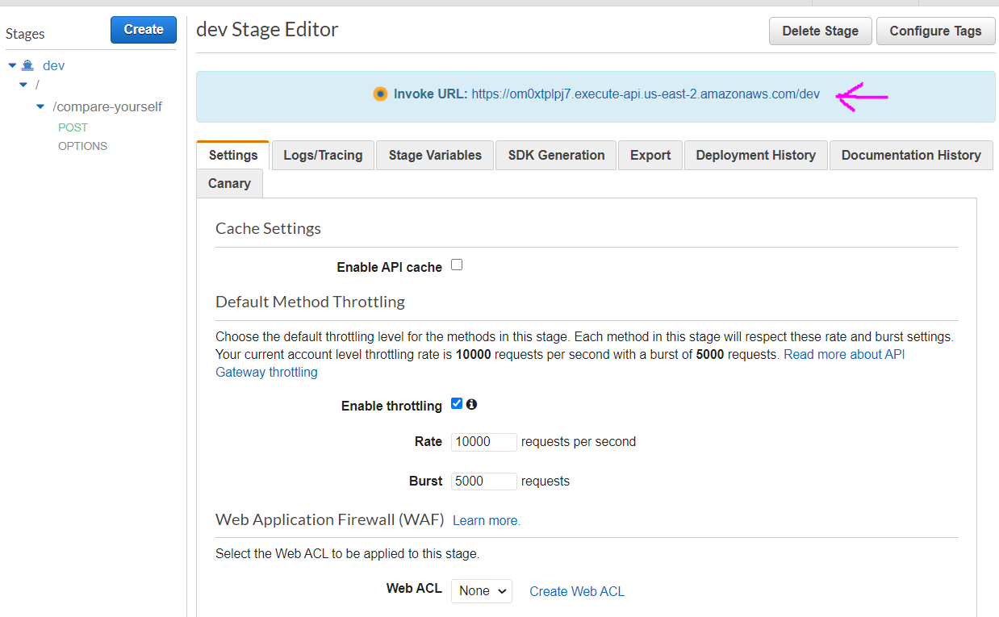

Click the button Create API to create new API (you can have multiple), if you don't already have one go to the next step
Keep the radio button selected as New API. And in the settings section provide some name for the API and some description. And click Create API button. 
Click the Actions button and from dropdown menu select Create Resource. Resources are the parts of the url.
Name the resource and click Create Resource
Note: Configure as proxy resource - means that this resource will also catch all other resources and methods. Some use case for catching everything would be if we are creating some kind of full stack application.
Note: Enable API Gateway CORS - the browser will check if our api/server allows to be accessed. By checking this box we will be also provided with resource with type OPTIONS, where in the Integration Response we can set our cors headers. By checking this box we will have some already predefined in the OPTIONS resource in the Integration response.
Now for the OPTIONS method in the Integration response we have these default headers, after we checked cors. Important note here is that cors headers will be added only for the OPTIONS method, but once we add the actual method we going to use (POST for example) we need to add the missing cors headers manually. Set the header key in the Method Response and header value in Integration Response.
Alternative and easy way to also add cors headers is while selected specific resource from the Action button to select Enable CORS. This way we can add for all methods for that resource.
Make sure you marked/selected the resource so you can give it a method type. Click again the Actions button and click Create Method for example GET method.
Click the small check button and you will be given the option to define some kind of controller. For example a Lambda Function. Click Save to finish the process. Of course if you don't have any Lambda function to use you will need to create one or if you do have type its name. Also confirm to give the APIGateway permission to use the lambda function.
Note: Lambda Function - we can run any type of code on demand, whenever this resource is reached.
Note: HTTP - with this option we can for example forward the request to another API.
Note: Mock - it is some kind of dummy endpoint which will do nothing, we could send some dummy data.
Note: AWS Service - with this option we can call another AWS service.
Note: Use Lambda Proxy Integration - if checked it will pass everything from the request as json to the lambda function. It will be now our responsibility to return meaningful response, otherwise we will get error.
Once saved you will see the following setup. By clicking the TEST icon you can test the result of the function. To be able to see this cycle view you need to have selected Resources from the menu on the left.
Click again the Action button and click Deploy API. From the popup window select Deployment Stage and give it a name and optionally description and click Deploy. Everytime we make changes on our API we have to deploy changes, otherwise they won't take effect.
And here you can see the generated route.
